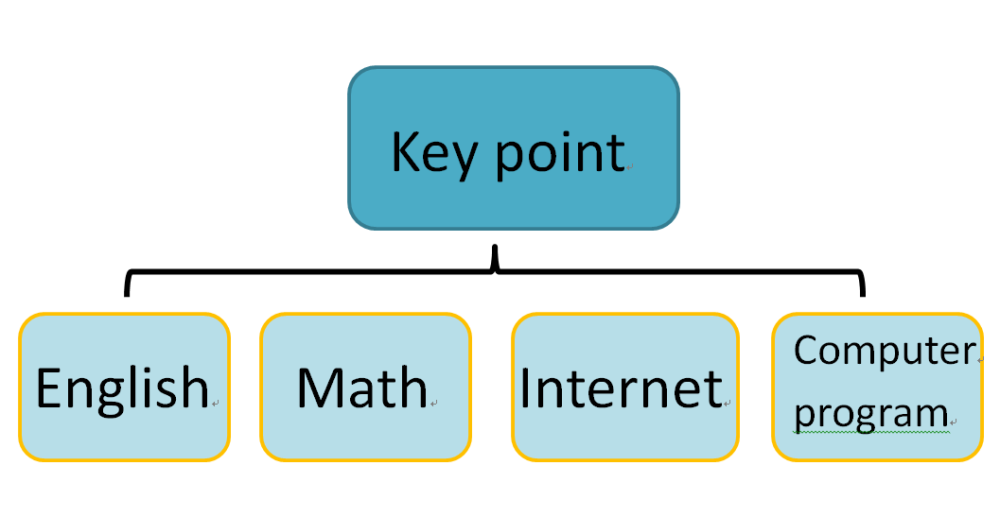

機械設計系一乙 40723221 邱正宇
計算機程式與電腦輔助設計實習課程網站
期中以前之進度和期末報告之內容整理，完全整理完分組網站後再整理個人之網站並且將每周專題所作之進度和課堂中所作之進度放置於每周進度中所作之流程圖放置期末報告成品與解說中。
期末專題:球的非彈性碰撞
期末PDF : https://drive.google.com/file/d/1wiw0DDAaX2UTFW0TDw4CcN7L9K-woPHQ/view?usp=sharing
期末ppt簡報:https://drive.google.com/file/d/1EcI-Vv_sxDnyHpSx9I5RaLdZ8G3F4pGO/view?usp=sharing
期末專題簡介:利用程式結合物理中的公式試著做出能夠示範物理課時的非彈性碰撞作動的方式，此次專題較為像是結合物理中運動軌跡的內容所做出的運動軌跡模擬，較為不像是一種遊戲。
計算機概論必須運用:
